「나는 가수다 · 호날두」
AI 패러디 쇼츠 A to Z 완전 분해
MBC 《나는 가수다》 실제 무대·대기실 영상에 AI 호날두 발라드 노래(가상 보컬), 무대 립싱크/얼굴 합성, 대기실 유명인 리액션 딥페이크(루니·김정은·네이마르·트럼프·즐라탄·안첼로티·메시·피구·페페·김여정)를 결합해 조회수 85만 회를 돌파한 바이럴 쇼츠의 구조·수치·도구·재현 공정을 실측 자료 기반으로 분해했습니다.
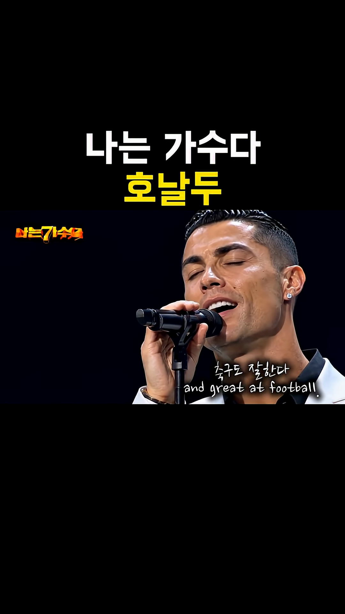
클릭하여 1080×1920 원본 비율 확대1핵심 결론 (왜 이 영상이 터졌나)
단순 얼굴 합성 밈을 넘어 한국형 발라드 예능 서사로 포장한 고몰입 패러디처음부터 풀 AI 영상(Text-to-Video)으로 무대를 생성한 것이 아니라, 실제 《나는 가수다》 무대 풀샷·클로즈업·대기실 화면을 16:9 베이스 레이어로 그대로 유지한 채 등장인물의 얼굴·입모양만 AI로 교체(Face Swap + Lip-Sync)했습니다. 덕분에 조명·무대 밴드·코러스·방송 로고·현장 질감이 100% 실제 방송처럼 보여 시청자의 위화감을 없애고 몰입도를 극대화했습니다.
밈 대사의 진지한 발라드화
호날두의 밈 어록(“나는 부자고 잘생겼고 축구도 잘한다”, “시우우우-”, “유로 우승 = 월드컵”)을 호소력 짙은 정통 한국 발라드 가사로 엮어 부조화 코미디 극대화.
실사 방송 + 타깃 Face Swap
흰 재킷 가수의 열창 몸짓·손짓·카메라 워킹은 실사 원본을 쓰고 얼굴만 호날두로 합성. 대기실 10명(메시·루니·즐라탄·트럼프·김정은 등)도 기존 안경·수트 위에 얼굴만 정교하게 교체.
짧은 리액션 + 감성 디졸브
대기실 리액션은 1.5~3.0초로 짧게 치고 빠지고, 호날두 열창 전환부(13.3초, 36초, 78초, 100초)는 0.6~1초 크로스디졸브로 겹쳐 예능 감동 톤을 재현.
9:16 액자 + 한/영 이중 자막
상단 2줄 굵은 제목으로 0.1초 훅을 걸고, 하단 손글씨체 한국어+영어 동시 자막과 영문 설명란을 넣어 국내·해외 축구 팬덤 양쪽 트래픽 동시 흡수.
2클로드눈 · 클로드귀 실측 데이터
요약.txt · 컷표.json · 소리표.json · 영상.info.json 실측값클로드눈 시각 실측 요약
| 컷 검출 조건 | 초당 2.0장 샘플링, 문턱 18.0, 최소간격 1.0초 |
|---|---|
| 화면 톤 분포 | 어두운 컷 18개 (100%) · 밝은 컷 0 · 흑백/세피아 0% |
| 컷 안 움직임 | 평균 6.7회 · 변화 없는 정적 컷 8개 (리액션 클로즈업 중심) |
| 레이아웃 비율 | 9:16 세로 캔버스 내 중앙 16:9 가로 무대 + 상·하단 블랙 레터박스 |
| 고정 브랜딩 | 상단 2줄 제목(흰색 나는 가수다 / 노란색 호날두) + 좌상단 로고 |
| 자막 스타일 | 한국어(상) + 영어(하) 2줄 손글씨체 + 두꺼운 검은색 외곽선(우하단/중앙하단) |
클로드귀 오디오 실측 요약
| 음량 / 다이내믹 | 통합 -16.97 LUFS / 최고점 -5.26 dBTP / 폭(LRA) 9.6 LU |
|---|---|
| 무음 구간 | 1곳, 0.8초 (1%) — 영상 끝 2:17~2:18 페이드아웃 여백 |
| 말 vs 음악 판별 | 순수 말 구간 3초(2%) / 음악(보컬+반주) 134초(97%) / 바닥 -37 dBFS |
| 효과음 검출 | 총 1개 (1:32.5 · 경적 Air horn · -17.1 dBFS · 판별 0.39) |
| 큰소리 피크 | 가창 고음부(0:14~0:45 등)에 -10.3 ~ -13.8 dBFS 피크 다수 |
| 가사 전사(Speechmatics) | 한국어(ko) 확신 100% · 15줄 273자 · 발화 중 분당 156자 |
3실측 시각화 차트 & 정밀 확대 프레임 (클릭 시 확대)
모든 이미지를 클릭하면 라이트박스로 고해상도 확대 및 키보드(← / → / ESC) 탐색 가능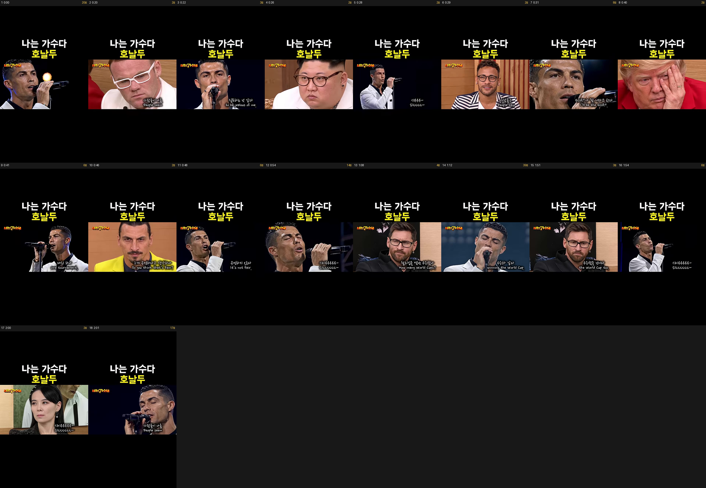
클릭 확대전체 18컷 대표 그리드 (컷표.png)
무대 위 호날두 열창 컷과 대기실 리액션 컷(루니·김정은·네이마르·트럼프·즐라탄·안첼로티·메시·김여정)의 교차 구조를 한눈에 보여주는 컷표.
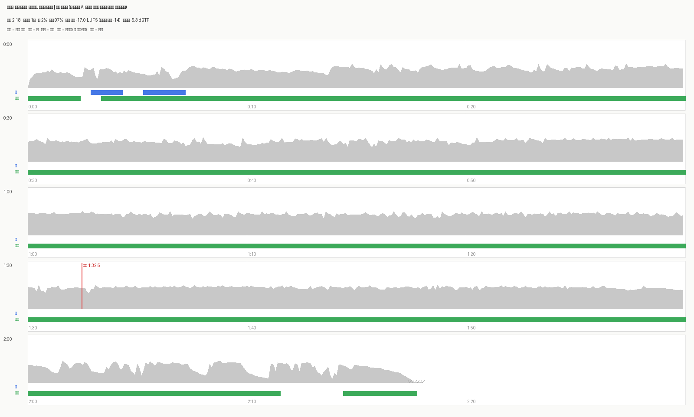
클릭 확대오디오 에너지 · 효과음 타임라인 (소리표.png)
0초부터 2:17까지 97% 구간이 끊김 없는 음악+노래로 채워져 있으며, 1:32.5 지점 빨간 세로선(경적 효과음) 단 1회만 삽입된 구조.
정밀 프레임 확대 4종 (AI 립싱크 · 크로스디졸브 · 대기실 Face Swap 증거)
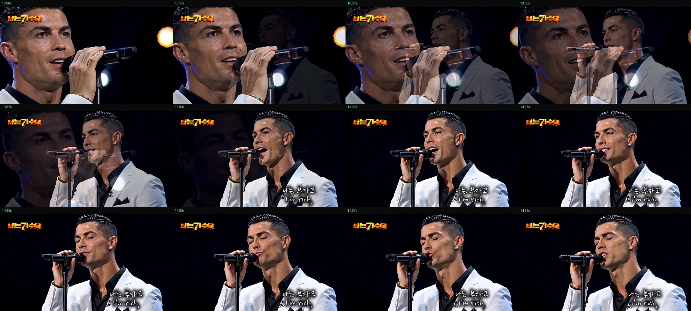
확대 AA. 호날두 열창 립싱크 & 0.7초 크로스디졸브 (0:13~0:15)
13.17초~13.83초 사이 두 카메라 앵글이 반투명으로 겹쳐 전환되며, 이후 흰 재킷·마이크·팔찌가 원본 실사 그대로 유지된 채 호날두 얼굴만 입모양을 맞춰 노래함.
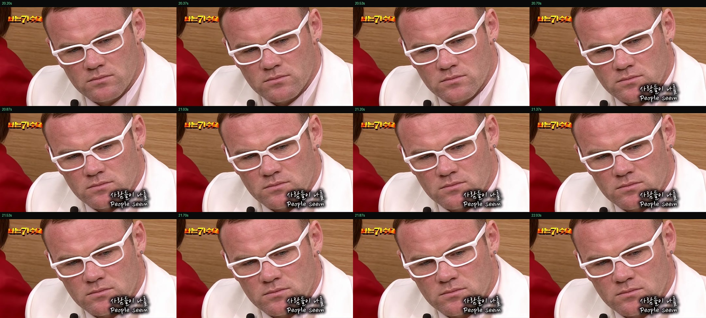
확대 BB. 웨인 루니 대기실 리액션 Face Swap (0:20~0:22)
원본 출연자의 하얀 뿔테 안경테와 조명이 살아있으면서 눈·코·입·피부 톤만 루니로 치환된 정교한 비디오 페이스 스왑 사례.
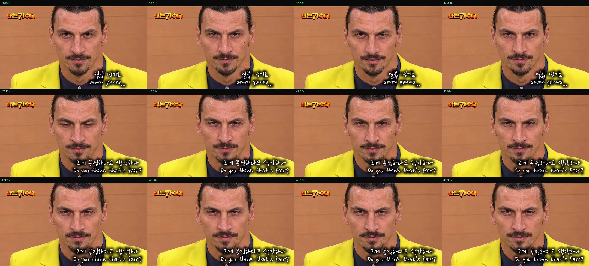
확대 CC. 즐라탄 이브라히모비치 리액션 (0:46~0:48)
47.17초 눈 깜빡임 모션이 프레임 단위로 부드럽게 이어지며, 노란 재킷 의상·머리카락 경계가 깨지지 않고 자연스럽게 블렌딩됨.
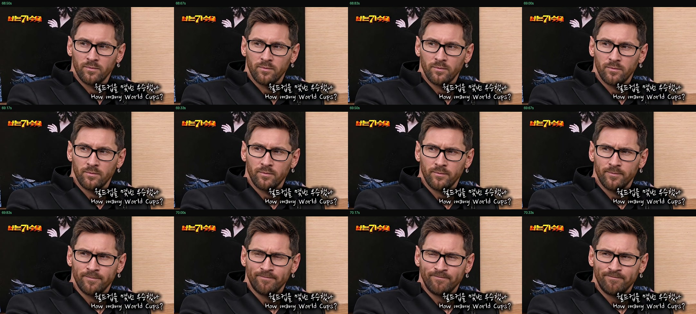
확대 DD. 리오넬 메시 핵심 펀치라인 리액션 (1:08~1:10)
“월드컵을 몇 번 우승했나?” 가사 타이밍에 맞춘 메시 컷인. 검은 뿔테 안경과 고개 움직임에 맞춰 미세하게 찡그리는 표정 연기가 그대로 이식됨.
주요 단일 컷 & 2초 간격 전체 시퀀스
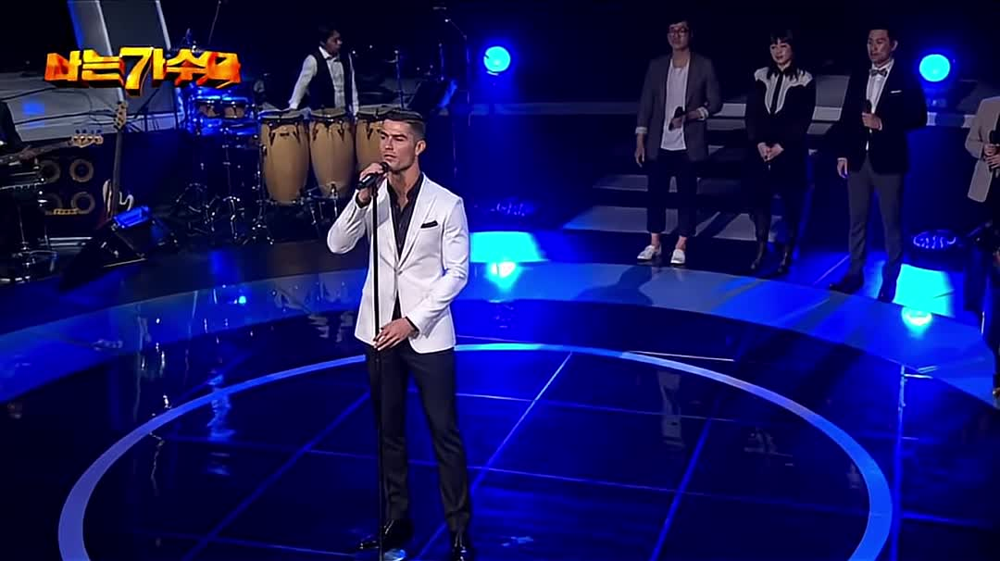
0:00 풀샷0:00 오프닝 풀샷 (실사 무대 증거)
좌측 타악기 세션과 우측 출연 가수진 구도가 《나는 가수다》 원형 무대 풀샷임을 명확히 보여줌.
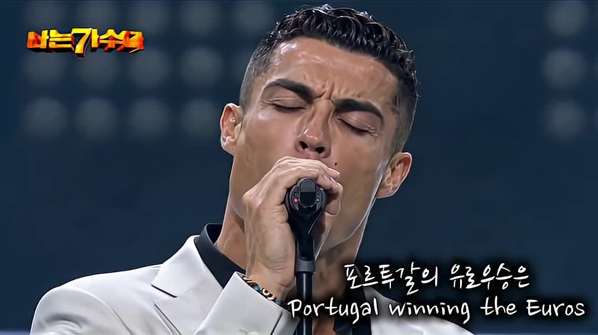
1:28 클로즈업1:28 고음 열창 & 손글씨 자막
미간 주름과 눈 감은 표정, 마이크 쥔 손 피부 톤까지 정합성이 높은 클로즈업 컷.
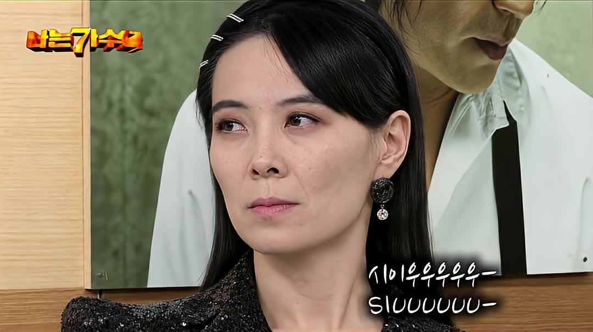
1:59 카메오1:59 후반 카메오 리액션 (1.5초)
후반부 하이라이트 직전 1.5초간 치고 빠지는 예상 밖 카메오 리액션으로 지루함 방지.
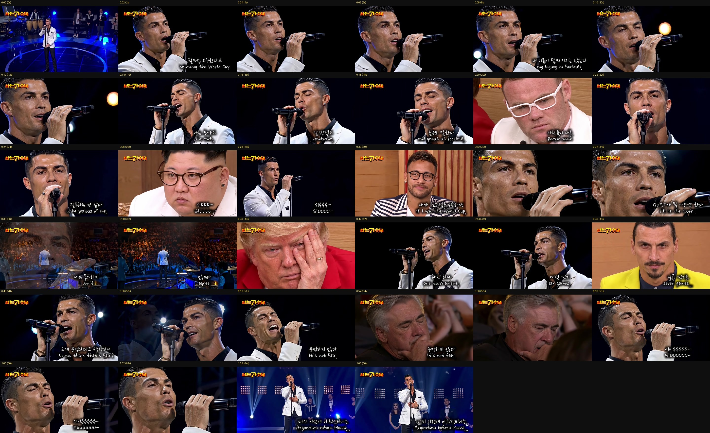
0:00~1:06전반부 2초 간격 전수 시트 (0:00 ~ 1:06)
디졸브 내부 컷과 등장 카메오 흐름을 2초 단위로 확인.
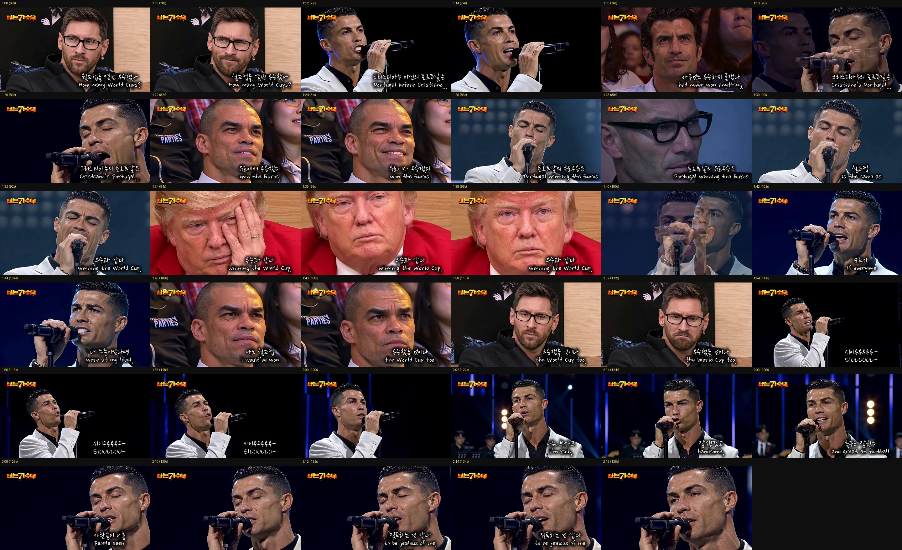
1:08~2:16후반부 2초 간격 전수 시트 (1:08 ~ 2:16)
메시·피구·페페·트럼프가 연달아 교차하는 후반부 몰아치기 구간.
4전체 타임라인 컷별 분해표 & 전사 가사
컷표.json(18컷) + 전체_2초간격_1/2 육안 판독 + Speechmatics 15줄 대사 매칭| 컷 | 시간 (길이) | 구분 | 등장인물 / 화면 구성 (2초 시퀀스 육안 포함) | 밝기 / 움직임 | 대사 / 자막 맥락 & 편집 포인트 |
|---|---|---|---|---|---|
| #01 | 0:00 ~ 0:20 (20.0초) |
무대 | 무대 풀샷(0s) → 호날두 클로즈업(2~12s) → 크로스디졸브(13.3s) → 바스트 열창(14~19s) | 밝기 18.9 움직임 28 |
“월드컵 우승 한다고 내 이름이 달라지지는 않는다 / 나는 부자고 잘생겼고 축구도 잘한다” · 오프닝 훅 + 첫 디졸브 |
| #02 | 0:20 ~ 0:22.5 (2.5초) |
리액션 | 웨인 루니 (하얀 뿔테 안경 + 흰 수트) | 밝기 47.4 움직임 0 |
“사람들이 나를 (People seem)” · 정적 컷으로 씁쓸하게 듣는 표정 |
| #03 | 0:22.5 ~ 0:25.5 (3.0초) |
무대 | 호날두 정면 클로즈업 (마이크 양손) | 밝기 18.0 움직임 3 |
“질투하는 것 같다 (to be jealous of me)” |
| #04 | 0:25.5 ~ 0:27.5 (2.0초) |
리액션 | 김정은 (안경 + 흰 옷, 대기실 응시) | 밝기 46.6 움직임 0 |
“시우우우- (SIUUUU-)” 첫 애드리브 구간 카메오 충격 |
| #05 | 0:27.5 ~ 0:29 (1.5초) |
무대 | 호날두 측면 미디엄 샷 (흰 재킷) | 밝기 16.8 움직임 0 |
“시우우우- (SIUUUU-)” |
| #06 | 0:29 ~ 0:31 (2.0초) |
리액션 | 네이마르 (스트라이프 재킷 + 안경) | 밝기 38.1 움직임 3 |
“사람들은 내가 월드컵을 우승하면” |
| #07 | 0:31 ~ 0:39.5 (8.5초) |
무대 | 호날두 얼굴 빅 클로즈업(32~34s) → 디졸브+풀샷(36~38s) | 밝기 21.8 움직임 8 |
“GOAT가 될 거라고 한다 / 나는 동의하지 않는다” · 36초 관객석 반사 디졸브 |
| #08 | 0:39.5 ~ 0:41 (1.5초) |
리액션 | 도널드 트럼프 (빨간 의상, 손으로 턱 굄) | 밝기 39.0 움직임 0 |
“않는다 (agree)” · 1.5초 초단타 리액션 |
| #09 | 0:41 ~ 0:46.5 (5.5초) |
무대 | 호날두 좌측면 바스트 샷 | 밝기 17.2 움직임 9 |
“대회 하나, 여섯 경기” |
| #10 | 0:46.5 ~ 0:48.5 (2.0초) |
리액션 | 즐라탄 이브라히모비치 (노란 재킷) | 밝기 43.0 움직임 0 |
“일곱 경기로 / 그게 공정하다고 생각하나” |
| #11 | 0:48.5 ~ 0:54.5 (6.0초) |
무대 | 호날두 열창(48~52s) → 카를로 안첼로티(54s~) | 밝기 17.2 움직임 6 |
“공정하지 않다 (It's not fair)” · 감독 안첼로티 고뇌 표정 연결 |
| #12 | 0:54.5 ~ 1:08 (13.5초) |
복합 | 안첼로티(56s) → 호날두 빅 클로즈업(58~62s) → 무대 풀샷(64~66s) | 밝기 20.6 움직임 16 |
“시우우우우우-” & “메시 이전에 아르헨티나는” · 풀샷으로 전환 |
| #13 | 1:08 ~ 1:12 (4.0초) |
리액션 | 리오넬 메시 (검은 뿔테 안경 + 귀걸이 + 검은 재킷) | 밝기 27.9 움직임 0 |
“월드컵을 몇 번 우승했나? (How many World Cups?)” · 최고 하이라이트 매칭 |
| #14 | 1:12 ~ 1:51 (39.0초) |
연속 몽타주 | 호날두(1:12~14) → 피구(1:16) → 디졸브(1:18) → 호날두(1:20) → 페페(1:22~24) → 호날두(1:26) → 안경 패널(1:28) → 호날두(1:30~32) → 트럼프(1:34~38) → 디졸브(1:40) → 호날두(1:42~44) → 페페(1:46~48) → 메시(1:50) | 밝기 24.9 움직임 32 |
“크리스티아누 이전 포르투갈 / 유로 우승 = 월드컵(1:32.5 경적 SFX!) / 모두가 내 수준이었다면 나도 우승했을 것” · 부드러운 톤 전환이 많아 1개 긴 컷으로 묶인 2부 절정 몽타주 |
| #15 | 1:51 ~ 1:54 (3.0초) |
리액션 | 리오넬 메시 재등장 (어두운 대기실) | 밝기 28.1 움직임 0 |
“우승했을 것이다 (the World Cup too)” · 여운 있는 2차 메시 컷 |
| #16 | 1:54 ~ 1:59.5 (5.5초) |
무대 | 호날두 측면 열창 | 밝기 14.9 움직임 1 |
“시우우우우우- (SIUUUUUU-)” |
| #17 | 1:59.5 ~ 2:01 (1.5초) |
리액션 | 김여정 (대기실 여성 패널 합성) | 밝기 42.2 움직임 0 |
“시우우우우우-” · 후반부 예상 밖 카메오 1.5초 |
| #18 | 2:01 ~ 2:18 (17.0초) |
무대 엔딩 | 호날두 정면 클로즈업 → 눈 감고 여운 엔딩 | 밝기 17.7 움직임 15 |
“나는 부자고 잘생겼고 축구도 잘한다 / 사람들이 나를 질투하는 것 같다” · 수미상관 엔딩 |
Speechmatics 음성 전사 가사 전문 (대사.txt · 15줄 273자)
※ 전사 모델에서 ‘부자고→보자고/푸자고’, ‘GOAT→코트’, ‘메시→날씨’, ‘시우→아쉬움’으로 인식된 것은 외국인(호날두) 특유의 한국어 발음 뉘앙스가 AI 보컬/보이스 변환에 반영되었음을 보여주는 직접적인 청각 단서입니다.
5요소별 AI 도구 & 기술 스택 역설계
실측 증거를 바탕으로 추정한 제작 파이프라인별 도구 매핑AI 발라드 작곡 + 호날두 음색(RVC) 결합
- 작사/컨셉 (LLM): 실제 호날두 인터뷰 밈(“I'm rich, handsome, and great at football”, 유로 우승 발언)을 한국어 발라드 문체로 번역·각색.
- 발라드 반주+가창 (Suno / Udio): 한국식 정통 록발라드 스타일(피아노→스트링→고음 폭발)로 MR과 가이드 보컬을 동시 생성.
- 보이스 스왑 (RVC · Retrieval-based Voice Conversion): 생성된 보컬 스템(UVR5로 반주 분리)에 호날두 음성 학습 모델을 씌워 호날두 톤과 외국인 발음 질감 구현.
- 효과음: 1:32.5 지점 ‘유로 우승=월드컵’ 펀치라인에만 경적(Air horn) 1회 삽입.
실사 방송 무대 위 얼굴 교체 + 립싱크
- 베이스 영상: 《나는 가수다》 실제 무대 풀샷·바스트·클로즈업 원본(흰 재킷·스탠드 마이크·밴드·조명 100% 보존).
- 얼굴 교체 + 입모양 구동: FaceFusion / Roop 계열 Video Face Swap으로 호날두 얼굴을 씌운 뒤, MuseTalk · Wav2Lip · LivePortrait · HeyGen · Kling 립싱크 등으로 발라드 가사에 맞춰 입·턱·눈 감기 모션을 정교하게 동기화.
- 검증 근거: 손목 팔찌·마이크·무대 조명이 프레임마다 흔들림 없이 실제 방송과 일치하며, 13.17s~13.83s 디졸브 구간에서도 배경 밴드와 마이크 위치가 일관됨.
안경·의상 보존형 Multi-Target Face Swap
- 캐스팅 전략 (10명): 축구인(메시·루니·즐라탄·네이마르·피구·페페·안첼로티) + 의외성 카메오(트럼프·김정은·김여정).
- 도구군: FaceFusion (InsightFace `inswapper_128` + GFPGAN/CodeFormer 업스케일 + Occlusion Masking) 또는 Akool / SwapFace.
- 핵심 디테일: 루니의 흰 뿔테 안경, 메시의 검은 뿔테 안경·귀걸이, 즐라탄의 눈 깜빡임(`확대_B/C/D` 실측)이 깨지지 않도록 마스크/고해상도 복원 파이프라인 사용.
9:16 액자 + 크로스디졸브 + 한/영 이중자막
- 편집기: Premiere Pro / CapCut / DaVinci Resolve.
- 전환 연출: 리액션은 하드 컷(1.5~3초)으로 펀치라인을 살리고, 무대 열창 구간끼리는 0.6~1.0초 크로스디졸브(
확대_A13.3s, 36s, 78s, 100s)로 감동 서사 연결. - 자막 & 제목: 상단 2줄 고딕 고정(
나는 가수다흰색 /호날두노란색), 하단 손글씨 폰트+두꺼운 검은 외곽선 한/영 2줄 자막으로 국내외 동시 시청 확보.
6A to Z 실전 재현 워크플로우 (벤치마킹 공정)
이 포맷을 우리 채널 규격으로 재현·변주할 때 따라야 할 6단계 공정어록 추출 + 2분 15초 서사 설계
- 주인공의 대표 어록·논란·라이벌 구도를 15줄 내외의 1인칭 고백 가사로 작성.
- 1절(자기소개·부정) → 2절(라이벌 저격: 메시·월드컵) → 클라이맥스(합리화+시우우) → 수미상관 엔딩 구조 유지.
Suno 작곡 + UVR5 + RVC 보이스 변환
- Suno/Udio에서 90~2000년대 한국 감성 록발라드 프롬프트로 2분+ 완곡 생성.
- UVR5로 보컬/반주 분리 후, RVC 모델로 타깃 인물 음색 입히고 -14 LUFS(유튜브 권장) 수준으로 마스터링.
예능 무대 + 대기실 리액션 컷 수집
- 정면/측면/풀샷이 골고루 있는 노래 경연 무대 클립과 대기실 클로즈업 리액션 8~10개 확보.
- 가사가 “메시/월드컵”을 찌르는 시점에 맞출 안경/고뇌/놀람 표정 리액션 컷 매칭.
안경·손 보존 마스킹 합성
- FaceFusion(또는 상용 AI 스왑)에 `face_enhancer` + `occlusion` 마스크를 켜서 안경테·마이크·손 가림 보존.
- 무대 열창 컷은 최종 오디오에 맞춰 립싱크 후처리 적용.
리액션 1.5~3초 + 무대 0.7초 디졸브
- 가사 펀치라인 끝부분에 대기실 리액션 1.5~3.0초 삽입(단, 지루하지 않게 의외의 카메오 2~3명 혼합).
- 무대 앵글 전환 시 0.6~1.0초 크로스디졸브로 한국 음악 예능 특유의 감성 호흡 재현.
상단 2줄 제목 + 이중 자막 + 면책 표기
- 1080×1920 세로 캔버스 중앙에 16:9 배치, 상단 흰/노랑 2줄 굵은 제목 고정.
- 하단 손글씨 한/영 이중 자막 + 설명란 AI 패러디 가상 영상 고지 및 영문 요약/태그 추가.